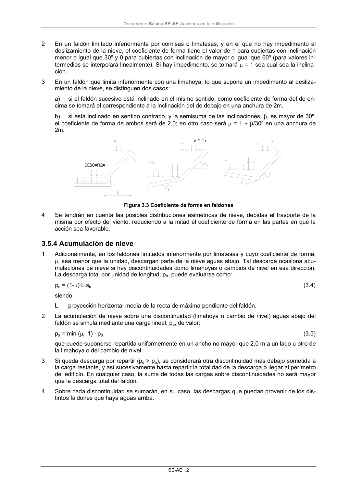

DB-SE-AE Acciones en la edificación · edición 2009-04 · capa oficial
Documento DB-SE-AE-oficial · SHA-256 del PDF 26116e5088955f0c6963a6187270cad282e1e7bf5a53a90f695c8fa50b4e4487
Copia fiel del PDF fuente · Fuente oficial
Ficha de la disposición en la fuente oficial
Formatos: JSON del segmento · Markdown
3.5.3 Coeficiente de forma 1 El viento puede acompañar o seguir a las nevadas, lo que origina un depósito irregular de la nieve sobre las cubiertas. Por ello, el espesor de la capa de nieve puede ser diferente en cada faldón. Pa- ra la determinación del coeficiente de forma de cada uno de ellos, se aplicarán sucesivamente las siguientes reglas Documento Básico SE-AE Acciones en la edificación SE-AE 12 2 En un faldón limitado inferiormente por cornisas o limatesas, y en el que no hay impedimento al deslizamiento de la nieve, el coeficiente de forma tiene el valor de 1 para cubiertas con inclinación menor o igual que 30º y 0 para cubiertas con inclinación de mayor o igual que 60º (para valores in- termedios se interpolará linealmente). Si hay impedimento, se tomará µ = 1 sea cual sea la inclina- ción. 3 En un faldón que limita inferiormente con una limahoya, lo que supone un impedimento al desliza- miento de la nieve, se distinguen dos casos: a) si el faldón sucesivo está inclinado en el mismo sentido, como coeficiente de forma del de en- cima se tomará el correspondiente a la inclinación del de debajo en una anchura de 2m. b) si está inclinado en sentido contrario, y la semisuma de las inclinaciones, β, es mayor de 30º, el coeficiente de forma de ambos será de 2,0; en otro caso será µ = 1 + β/30º en una anchura de 2m. Figura 3.3 Coeficiente de forma en faldones 4 Se tendrán en cuenta las posibles distribuciones asimétricas de nieve, debidas al trasporte de la misma por efecto del viento, reduciendo a la mitad el coeficiente de forma en las partes en que la acción sea favorable.
